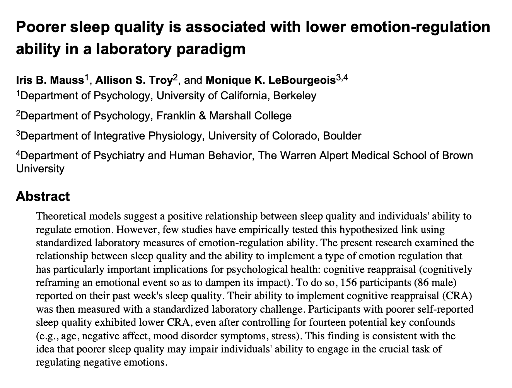
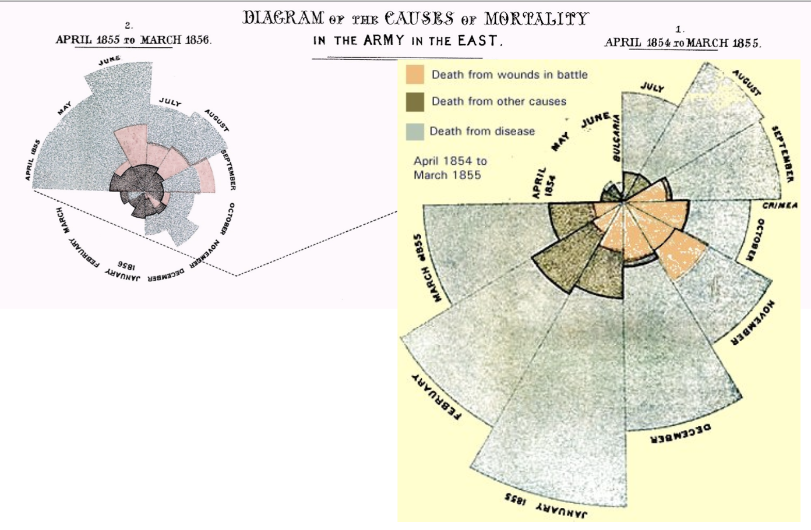
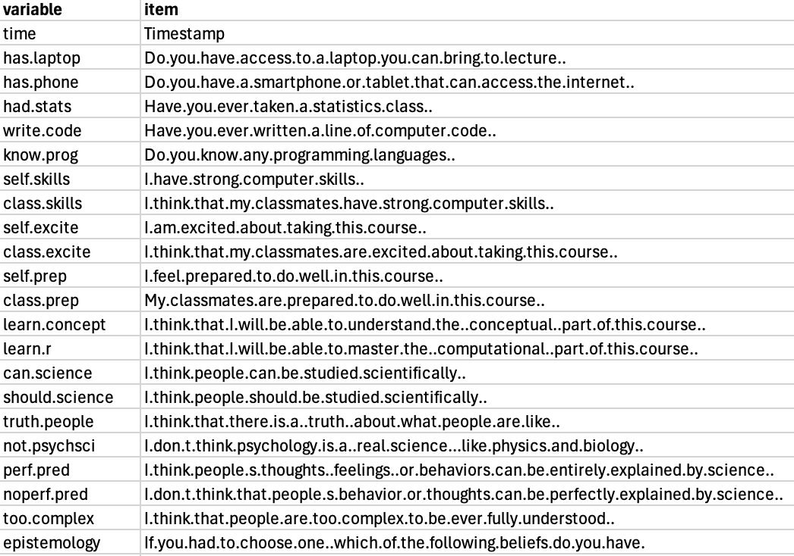
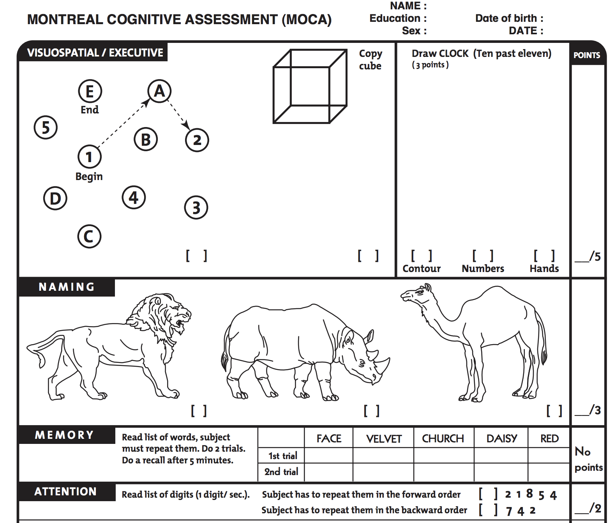

Chapter 2 | Working with Data
Check-In, Agenda, and Announcements
Welcome Back!
Access this Document Here : catterson.github.io/calstats/calstatsSP26.html
Agenda
2:10 - 2:20. Check-In & Review
2:20 - 3:20. Working with Data Using Computer Tool (R)
3:30 - 3:40. BREAK TIME #1. Long break.
3:40 - 4:00. Operationalization, Construct, and Measurement, Oh My!
4:00 - 4:25. Getting started on literature reviews.
4:35 - 5:00. Farewell & Questions About Grad School.
Announcements
DISCORD IS BUMPIN :
students (and sometimes professor) helping students : with the R stuff; the real stuff; the gobears stuff.
students helping professor : “notes for next time” and clarifications for this time.
Lab 2 is Posted. We are going to work on this today. Yay.
Brain Exam in Three Weeks (in section after the Chapter 4 lecture.)
We will practice in class and in section. Gonna be chill.
If can’t attend section; talk to your GSI (best : take in another one of their sections.)
DSP : you’ll have extra time (and quiet space) as needed. Went well last semester.
“I want to learn more than is provided!”, said the student(s).
ggplot2 : for fancy graphs.
Quarto / RMarkdown : for more authentic ways of embedding code, output, and words together. (what I’m writing the textbook and class notes in.)
Check-In Review
PART 1 : Data With Human Brain and R
A Picture Is Worth 1000 Words.
Florence Nightingale
- Did you learn about Florence Nightingale in other classes? [Clap : Yes / No]
- What did you remember learning about Florence Nightingale in other classes?
Class Discussion.
- Ice Breaker : What’s your favorite way to feel better when sick?
- What’s going on in this graph / who cares / how can we use this knowledge??
- What variables are in the graph? How would you organize them as a linear model?

Lab 2
Paste Lab 2 questions into a Google Document you can edit.
Create a new R Script; save it as Lab 2.
Access the Onboarding Survey Data and Codebook
THE CODEBOOK : Onboarding Survey
Look over the codebook –>
- What is one variable from the dataset that is interesting to you (if any)?
- Is this categorical or numeric data?
- What predictions do you have about what this variable will look like?
- How might we use knowledge of this variable?

DATASET : the Onboarding Survey
Load the Data into R :
make sure you are working with stats_onboard.csv
posit.cloud : clicking on the name to load (vs. the “Import Dataset”)
The Three Things to Remember When Loading Data:
rename the long file name to something short!
check the headers
set stringAsFactor = TRUE
Work on the Lab :
Graph two variables, make the graphs look nice, and learn about the individuals in the data from the graph.
two numeric variables
one categorical variable?
no stats terms!
Save your work for Lab 2, Question 1. Yeah!
Student Show and Tell?
the Chancellor Rich Lyons is our Chancellor. Professor asked for a Guest Lecture
BREAK TIME : MEET BACK AT ______ !!!!
PART 2 : Defining Data
Operationalization, Construct, and Measurement Error
- operationalization : how researchers define the variable(s) they will study; this is a process; often the focus of a researcher’s question in the scientific method.
- construct : some operationalized psychological phenomenon of interest. some examples below :
- voxel : three dimensional area of brain activation
- self-esteem : how a person feels about themselves
- secure attachment style : how much a person seeks out and trusts a relationship partner.
- measurement error : when there is a lack of validity in our measures. The more error in our measures, the more error there will be in our predictions (“garbage in → garbage out”).
KEY IDEA : the way a variable is measured is CRITICAL.
What comes to mind when you think of a “Cognitive Examination”?
ACED the “Cognitive Examination”

The Scientific Operationalization of the Cognitive Examination
ACTIVITY : No talking please!
Want to create consistent conditions for all to watch and hear. Thank you.
Counting Interruptions
Count the number of interruptions in the video (which professor will play below).
Submit your answer, then wait for the letter of the day.
DISCUSSION TOPICS :
Why is this a problem for science???
How do we OPERATIONALIZE an INTERRUPTION?
What PREDICTIONS can we make about counting interruptions a second time?
PART 3 : GETTING STARTED ON LITERATURE REVIEWS.
Academic Business : Questions About These Terms?
The People Involved:
author : the person(s) who writes the article
affiliations : where the authors come from
editor : a person who sends the article to review, and ultimately decides whether to accept / reject an article for publication.
peer reviewers : other scientists who comment on the article and give feedback before it is published (unpaid, anonymous, and uncredited on the paper.
Types of Scientific Articles
original report : one or more studies where researchers collect original data to answer a specific question(s)
replication : a copy of a previous original report (with new people)
literature review : summarizes main ideas from past research to find common themes
meta-analysis : summarizes data from past studies to find common themes.
The Ways To Evaluate :
citation count : the number of times that other people reference a specific article.
impact factor : the average number of times the average article in a journal has been cited in an average year
jargon : the specific words psychologists use to define variables.
APA Citation (or “Citation in APA Format”) : a super specific way of referencing an article that you do NOT need to memorize because computers do this for us.
Literature Review
Goals :
Learn more about the topic than you did before.
See what past research has been done on your topic.
Keep an organized record of what you find so you can access it later.